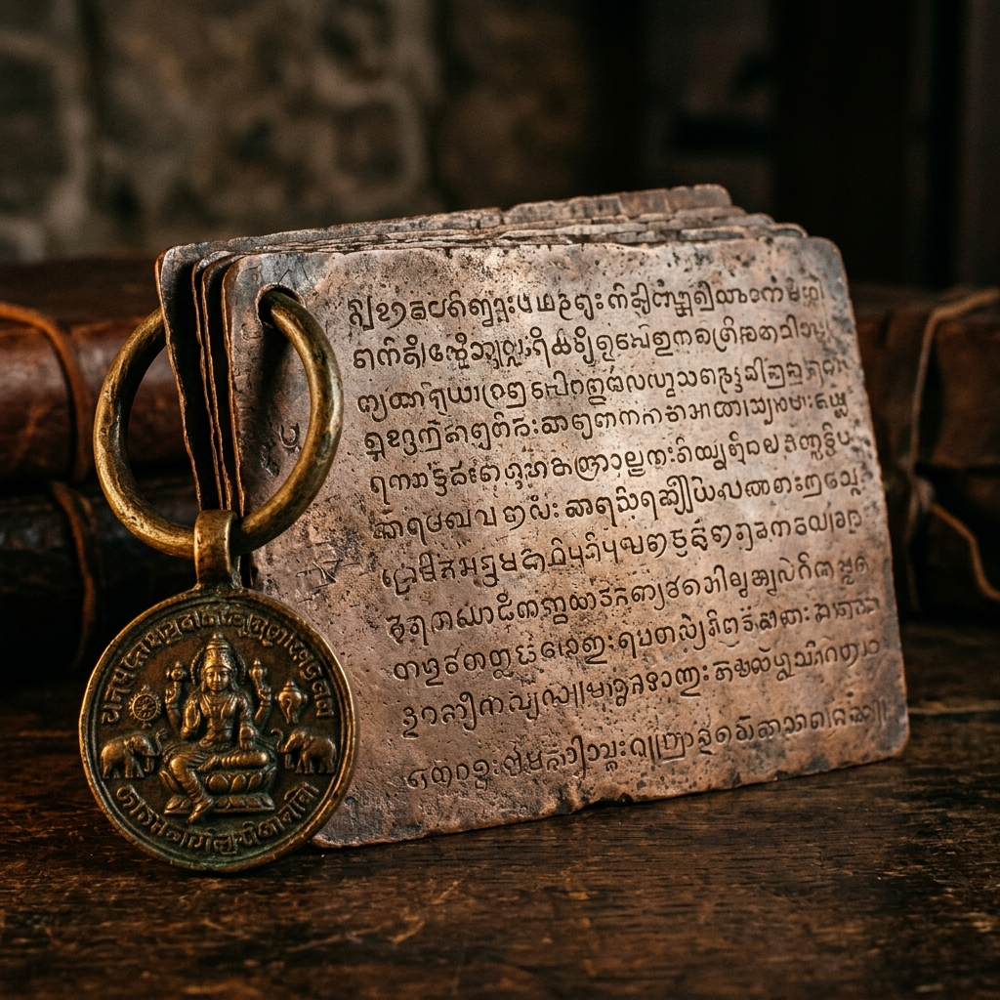
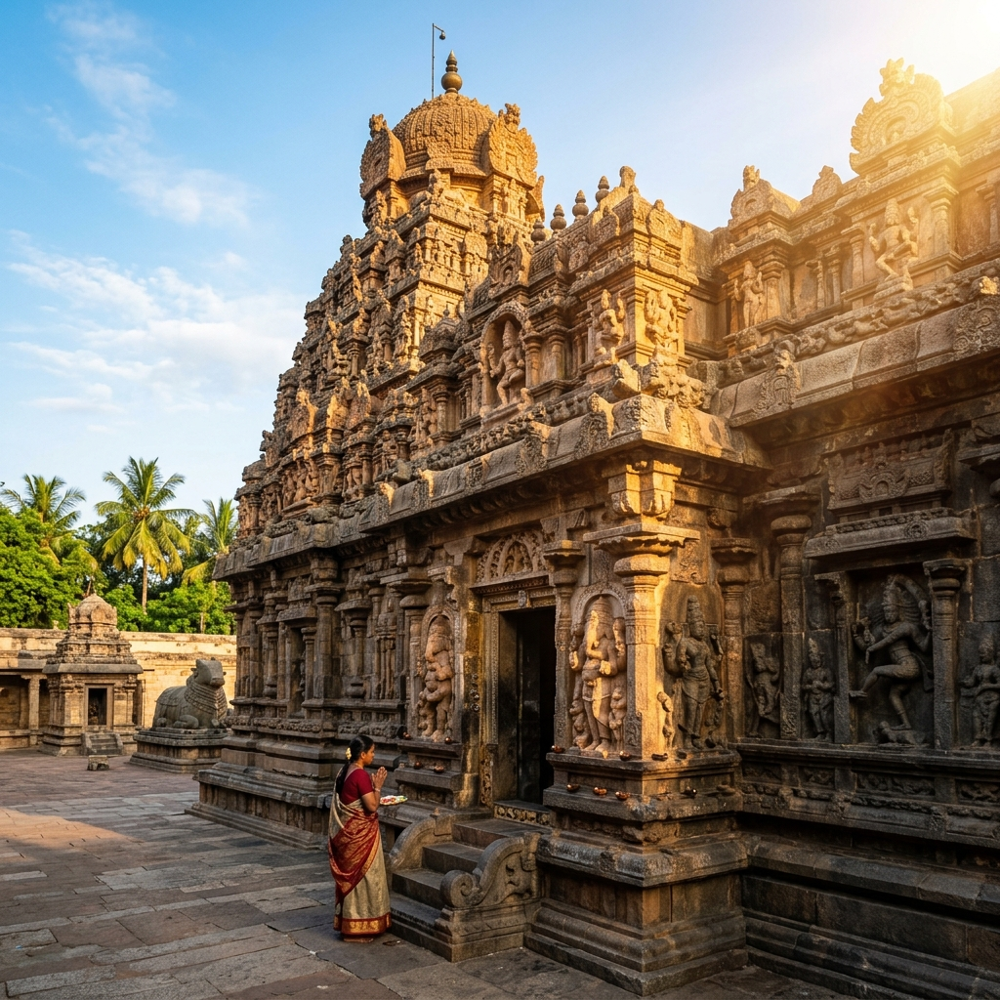
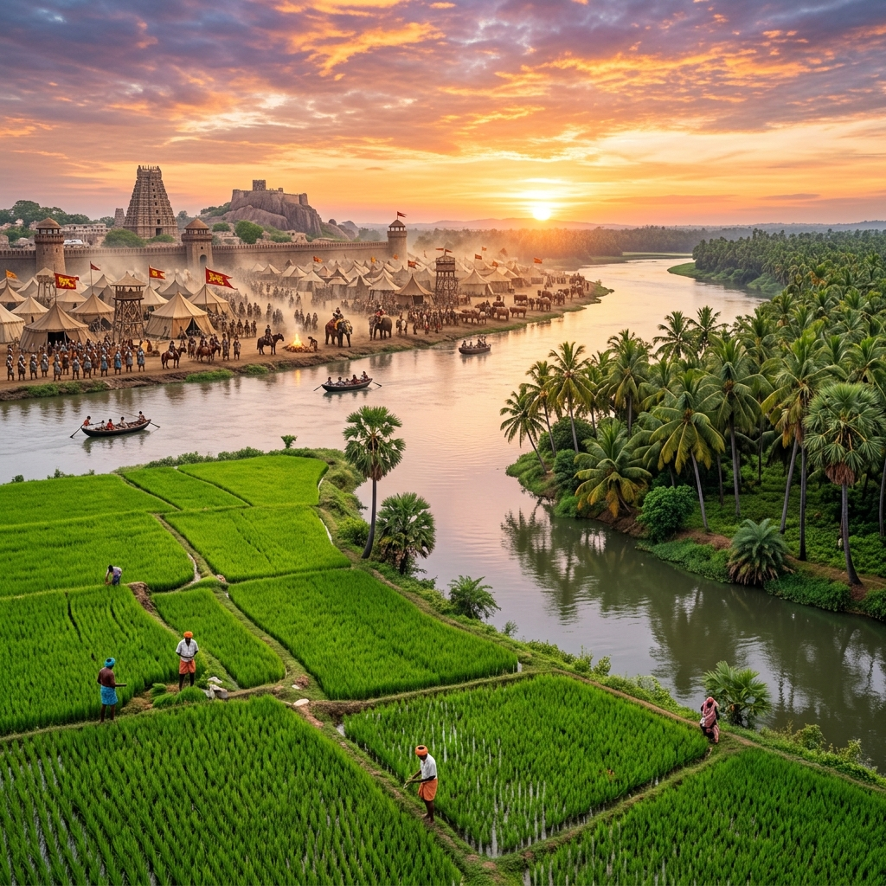

Battle of Sripurambiyam Explorer
Step onto the sacred plains near Kumbakonam. Explore the legendary battlefield where a coalition of Pallavas, Gangas, and Cholas broke Pandya supremacy and set the stage for the rise of the glorious Chola Empire.
The Pandya Advance and the Coalition Response
By the late 9th century, South India was a battlefield of three major powers: the Pallavas of Kanchi (in terminal decline), the rising Pandyas of Madurai, and the resurgent Rashtrakutas. Seeking to consolidate control over the fertile Kaveri delta, Pandya King Varagunavarman II invaded the region, marching up to Kumbakonam and threatening Kanchipuram.
Faced with total conquest, Pallava King Aparajita formed a defensive coalition. He secured the alliance of his Western Ganga vassal, King Prithvipathi I, and his Chola subordinate, Aditya I. The stage was set for a decisive clash at Sripurambiyam, a village near Kumbakonam, which would alter Dravidian history forever.
🏛️ At a Glance
- Combatants: Pallava-Ganga-Chola Alliance vs. Pandya Kingdom.
- Location: Sripurambiyam near Kumbakonam, Tamil Nadu.
- Outcome: Alliance victory; Pandya forces routed.
- Significance: Marked the birth of the Chola Empire.
Participating Kingdoms & Allies
The battle brought together various powerful states, each with distinct dynastic ambitions.
The Pallava Empire
Led by Aparajita. Nominally the sovereign of the coalition, attempting to preserve their centuries-old hegemony in the northern Tamil country.
The Western Gangas
Led by King Prithvipathi I. Deployed a formidable elephant force, spearheading the vanguard division of the coalition army.
The Chola Dynasty
Led by Aditya I. Still a small vassal kingdom of Uraiyur, they used this campaign to secure independence and seize the Kaveri delta.
The Pandyas of Madurai
Led by Varagunavarman II, defending their northern conquests with an elite infantry corps and massive cavalry reserves.
📈 Battle Timeline
- Pandya Push: Pandyas capture Kumbakonam and dig in near the river banks.
- Vanguard Charge: Western Ganga King Prithvipathi I leads a charge into the Pandya lines.
- Martyrdom: Prithvipathi I is slain in combat, throwing the Pandya lines into chaos.
- Chola Flank: Aditya I attacks from the high ridge, routing the Pandya army.
Martyrdom and the Chola Masterstroke
The battle opened with a fierce clash of war elephants. The Ganga king Prithvipathi I led a daring, direct assault into the heart of the Pandya ranks. While Prithvipathi I fought heroically, he was ultimately surrounded and slain. His sacrifice, however, disrupted the Pandya defensive formations and threw their ranks into disarray.
Seizing the moment, Chola prince Aditya I launched a coordinated flank attack from the elevated river ridges. The Chola horsemen broke the Pandya lines, leading to a complete rout of Varagunavarman's forces and securing a victory for the coalition.
The Rise of the Imperial Cholas
How a vassal state transformed into one of India's greatest maritime empires.
Fall of the Pallavas
Although victorious, the Pallavas were severely weakened. Aditya I eventually overthrew Aparajita and annexed Kanchipuram in c. 903 CE.
Aditya I's Sovereignty
Aditya I established the independent Chola kingdom, shifting the center of Tamil power to the Kaveri basin.
The Maritime Legacy
Sripurambiyam cleared the path for successors like Rajaraja I and Rajendra I to build an empire spanning Southeast Asia.
Chronology of the Sripurambiyam Era
Follow the historical events surrounding the decline of the Pallavas and rise of the Cholas.
Pandya Invasion
Varagunavarman II marches north to annex the fertile regions of the Kaveri delta.
The Battle of Sripurambiyam
The coalition forces engage the Pandyas. Ganga King Prithvipathi I sacrifices his life, and Aditya I clinches the victory.
Chola Expansion
Aditya I consolidate control over the Kaveri basin, building stone temples to Shiva along the river banks.
Annexation of Kanchi
Aditya I defeats the Pallava king Aparajita, ending Pallava rule and establishing the Cholas as the supreme power.
Relics and Sites of the Chola Era
Explore the stone inscriptions and temple shrines that commemorate the battle and the kings.

Udayendiram Copper Plates
The copper plate charter detailing the battle of Sripurambiyam.

Kumbakonam Temple Carvings
Early Chola stone architecture and relief carvings of deities near the battlefield.

Sripurambiyam Plains
The river delta fields where the kingdoms clashed in 879 CE.
📚 References & Further Reading
- Western Ganga Royal Charters (c. 920 CE). The Udayendiram Plates of Prithvipathi II.
- Nilakanta Sastri, K. A. (1935). The Colas. University of Madras.
- Balasubrahmanyam, S. R. (1966). Early Chola Art: Aditya I. Asia Publishing House.
- Archaeological Survey of India (N.D.). Inscriptions of Aditya Chola I and Nageswaran Temple.